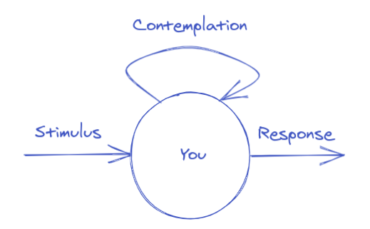

What flat-pack furniture has to do with teamwork
What flat-pack furniture has to do with teamwork
Most people in the modern world today have at some point in their life had the pleasure of building flat-pack furniture. After a few hours of not being sure what part goes where and looking for that one screw you surely had in your hand not a moment ago, you finally assemble the last piece, and voila! Your very own hand built piece of furniture. You look at what you’ve just created and can’t help but feel a little proud. I made this!
A lot of people working today work together with others in a team. It sometimes happens that there are diverging opinions between team members about something. Things can get heated. Both parties arguing feel that their take on things is better than the other. You might have also felt this yourself too, I sure have. My opinion is more valuable than the other. Could it be that we value something more because we made it? How can we deal with this effect?
The IKEA-Effect
Luckily for us, a group of researchers had the same hunch and decided to do some experiments. In the first, they let people assemble some boxes. After that, they put the now assembled box next to a pre-assembled box and asked the participants for their willingness to pay for each of the products. Participants were willing to pay around 63% more for their self assembled box!
We value what we make more (Photo by tabitha turner on Unsplash).
Another experiment in this series had the participants fold some origami frogs and cranes. They had professionals build the same paper animals. They then asked the builders to value their own piece, and had others value both the professional’s piece as well as the builder’s. The builders valued their own handiwork at the same value as the others had valued the professional origami, while the others had valued the builders effort 5 times lower!
Clearly, we value whatever we make a lot more. This cognitive bias has been named after the famous Swedish do-it-yourself furniture seller, IKEA. Even though this bias might seem to apply only to material things, there are ways where awareness of this bias can help us.
Bias awareness
Conflict can arise in any team when two people both have an idea on how to solve a problem. In the hypothetical case that both solutions are equally good, thanks to the IKEA effect, both parties feel their idea is better since it is their own. This can cause people to go into a loop. Why can’t the other see that my solution is the best? If you are aware of this bias yourself, however, it will be easier for you in this case to set aside this feeling and take a moment to reflect; do I really think my idea is better, or is it just my idea.
“Between stimulus and response there is a space. In that space is our power to choose our response. In our response lies our growth and our freedom.” - Viktor Frankl
 You can decide how to respond to a stimulus (made in Excalidraw).
Important is the notion that you are between every stimulus you receive and every response you give. It gives you the opportunity to reflect on if the action you feel like taking is the action you should be making. It also gives you the possibility to think of alternatives and to look inward to see if there is an alternative, better action readily available. Being aware of your biases helps your contemplation and makes you less susceptible to them.
Not everyone is aware of their cognitive biases though, so this will not always solve the issue. There are, however, other ways to deal with it.
Cooperation
We can use IKEA effect for other benefits too. Instead of working on something by yourself, you can ask someone to help you. By doing so, both you and your collaborator will value what you’ve done together higher than had the other done it alone. If we do this on most of the work in a team, it makes sure that the team values all of the contributions more, because they’ve had a say in it all.
You can also apply this if you don’t like someone else’s idea. Recognize your possible bias and get involved in the idea proposed. Give input on it or ask questions and make it so that you had an active part in the final idea. Most of the time you can turn your initial negative feelings towards the solution around into positive ones just by actively cooperating.
 Collaboration is key (Photo by Windows on Unsplash).
Collaboration is key (Photo by Windows on Unsplash).
In programming we see collaboration coming back in practices like Pair Programming and Ensemble Programming (also known as Mob Programming). Of course, there are more upsides to collaboration than just valuing the work more, but we’ll save that for another day.
Compromise
During a moment of conflict when there are opposing ideas, there is another way of making the IKEA effect work for you. By listening well to what the other party has to say, you can look for ways in which your ideas overlap. After finding that common ground, you can try coming up with a solution from there. By doing this, you can build something new together which you will both value more.
More generally in a team setting, you should prefer collective ownership of responsibilities. By sharing responsibilities more broadly, you make sure that people care more about what the team does instead of only a single part. That way, your team really becomes a team instead of a collection of individuals. An example can be found in the DevOps movement, where the responsibilities of both Development and Operations are shared by the team.
We now know we have a cognitive bias, called the IKEA effect. It causes us to value our own work more. Examples of this are when we build IKEA furniture, fold a piece of paper or when we work on a problem. We can use this bias to bind our team together by doing work together. This causes us as a team to value our work collectively more than had we done everything on our own.
Hopefully, you now know why you tend to you like your own work more than that done by others. I’d love to hear your insights and ideas on this topic, so if you have any, please leave a comment!